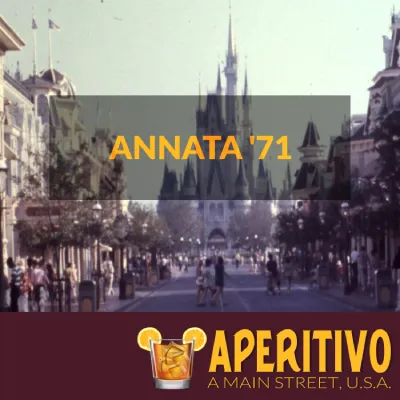

Disney World News: Mascherine, Spettacoli e Sorprese - Ep.39
By Valentina
17 Maggio 2021
Sommario dell'episodio del 17 Maggio 2021
Niente più mascherine all'aperto nei parchi di Walt Disney World! Grazie ai progressi della campagna vaccinale negli USA, è caduto l'obbligo di indossare mascherine in tutti i luoghi all'aperto.
Fuochi d'artificio di ritorno nei parchi? Qualche indizio a proposito...
Il Festival of The Lion King è tornato ad Animal Kingdom! Guarda il nuovo spettacolo direttamente dal parco:

Sorpresa! Una mini-serie chiamata Annata '71 è in arrivo sul podcast: vi racconterò tutta la storia delle 19 attrazioni presenti all'apertura di Magic Kingdom. Sarà il mio piccolo modo di festeggiare il cinquantesimo del parco e di scoprire storie interessanti con voi. Gli episodi di Annata '71 usciranno ogni secondo Giovedì, a partire dal 23 Maggio.
Ed a proposito di podcast, vi voglio segnalare l'uscita nei giorni scorsi un nuovo Podcast dedicato a Disneyland Parigi. Il primo di 8 episodi è già disponibile su tutte le piattaforme audio.
Se quest’articolo è stato interessante, non dimenticarti di seguirci sul podcast “Aperitivo a Main Street, U.S.A.”, disponibile su Spotify, Anchor e tutte le altre maggiori piattaforme audio!